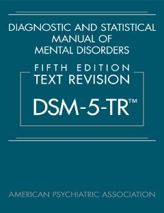

DARuhiy kasalliklarni tashxislash va tasniflash bo'yicha xalqaro standart qo'llanma.
Ushbu qo'llanma ruhiy kasalliklarni tashxislash va tasniflash uchun xalqaro miqyosda qabul qilingan asosiy standart hisoblanadi. DSM-5-TR ruhiy salomatlik mutaxassislari uchun kasalliklarni aniqlash va davolash rejalarini ishlab chiqishda muhim manba bo'lib xizmat qiladi.